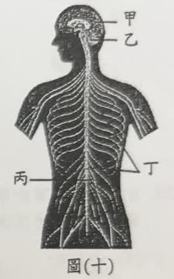
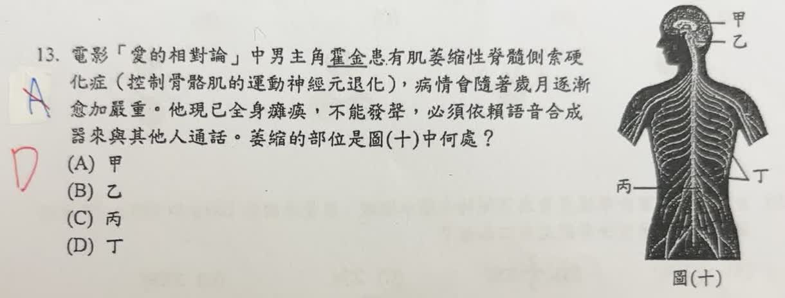

分享原卷｜第 13 題
完整原題

先想一想，再查看答案、解說與原圖
逐項解析
| 選項與原句 | 判讀 | 句意與判斷理由 |
|---|---|---|
| (A) 甲 | 不選 | 甲是大腦，包含控制隨意運動的區域。不能用「不能動」就直接判為整個大腦的問題，也不能反過來說漸凍症完全不影響腦內運動神經元。 |
| (B) 乙 | 不選 | 乙是小腦，主要協調運動與維持平衡，與本題預設的運動訊息傳至骨骼肌之分類不符。 |
| (C) 丙 | 不選 | 丙是脊髓，是傳遞訊息與部分反射的中樞。原卷未選它，但漸凍症確實涉及脊髓中的運動神經元，不能說脊髓完全不受影響。 |
| (D) 丁 | 應選 | 丁指向分布至身體各處的周圍神經。依原卷紅筆及出題者把運動訊息傳至肌肉的簡化分類，預期選丁；這不是疾病只影響周圍神經的證明。 |
詳細說明與解題步驟
先對照附圖：甲為大腦、乙為小腦、丙為脊髓、丁為分布到身體各處的周圍神經。原卷紅筆訂正為D，出題者是要從括號「控制骨骼肌的運動神經元退化」，連到將運動訊息傳向肌肉的神經，因此本題保留預期答案D。
原題用語須留意：「萎縮的部位」並不精確，不能據此把漸凍症背成只有丁受影響。漸凍症涉及腦與脊髓中的運動神經元退化；神經不能正常傳遞訊息後，肌肉因失去神經支配而逐漸萎縮。因此不能排除腦、脊髓的運動神經元，也不能說丁代表的所有周圍神經都會退化。
讀題練習可寫成：依本題簡化圖示選D；真正的概念是「控制骨骼肌的運動神經元退化，造成肌肉無力與萎縮」。圖示分類與疾病實際影響範圍，應分開理解。此項原題用語疑義已列入確認清單。
查核依據：美國國立神經疾病與中風研究所（NINDS）《Amyotrophic Lateral Sclerosis》說明運動神經元位於腦與脊髓，退化後肌肉失去訊息而萎縮。
https://www.ninds.nih.gov/sites/default/files/2025-05/NINDS_ALS_Booklet_Digital-508c.pdf
核對註記：原題、選項與附圖已核對；保留原卷預期D及科學用語限制，已由使用者確認。
原圖（僅本題）
